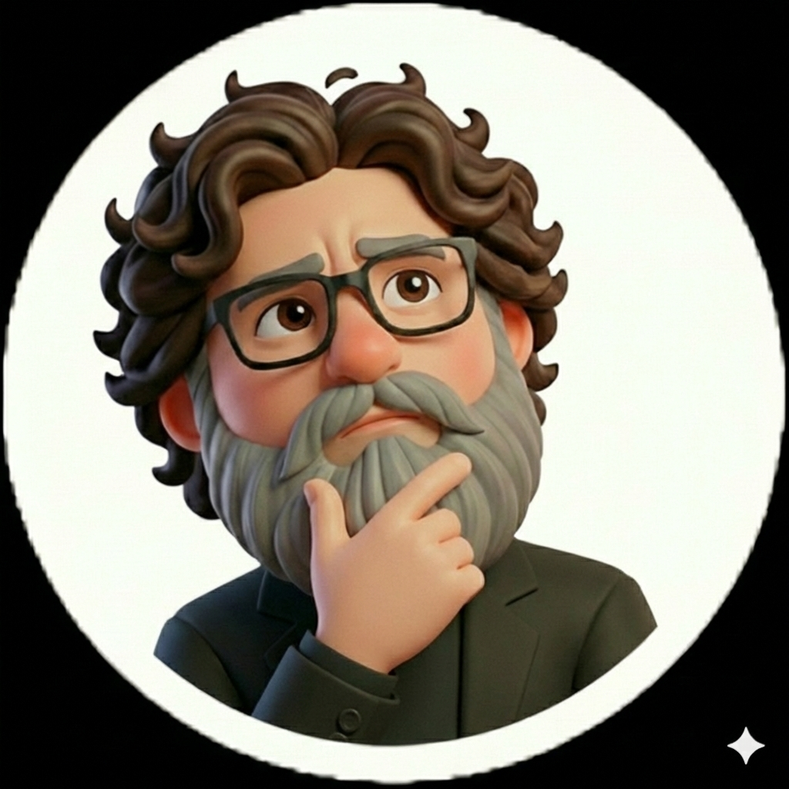

portfolio
armin

Umschuler
Fähigkeiten
- html, css
- PHP
- JAVA
- Python
Kontakt
armin
über mich
Ich bin in Iran geboren und lebe heute in Berlin, wo ich meine berufliche Zukunft im IT‑Bereich aufbaue. Mich motiviert die Mischung aus kultureller Vielfalt und technischen Möglichkeiten, die Berlin bietet.
Mein Weg
Der Umzug nach Deutschland war für mich ein großer Schritt, der mir neue Perspektiven eröffnet hat. Besonders wichtig ist für mich das kontinuierliche Lernen – sowohl im sprachlichen Bereich als auch in der Informatik. Jede neue Fähigkeit bringt mich meinem beruflichen Ziel ein Stück näher.
Warum IT?
Technologie hat mich schon immer fasziniert. In Berlin habe ich die Chance, mein Wissen weiterzuentwickeln und in einem modernen Umfeld praktische Erfahrungen zu sammeln. Lernen gehört für mich zum Alltag, und ich freue mich über jede neue Herausforderung.